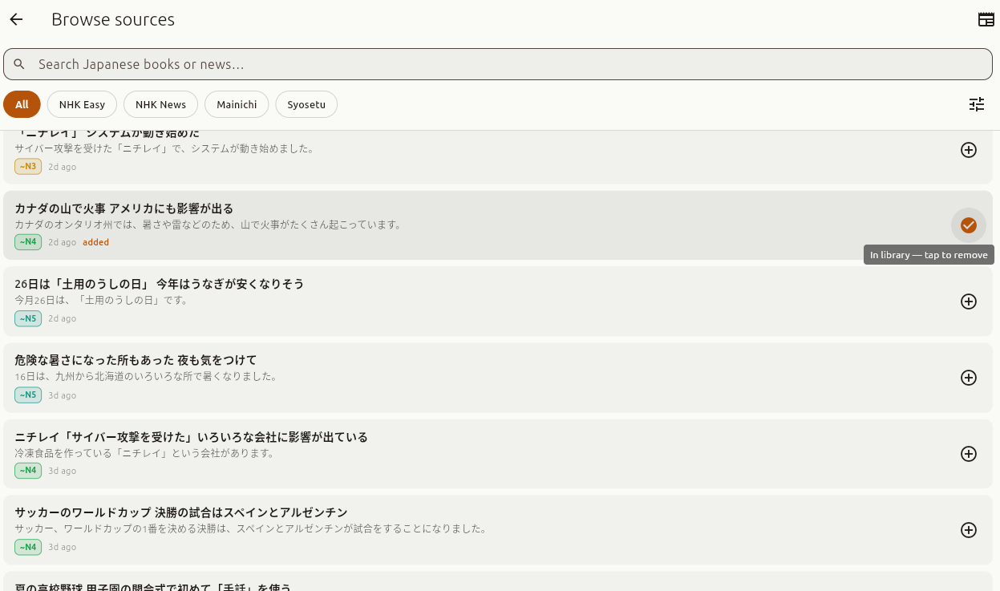
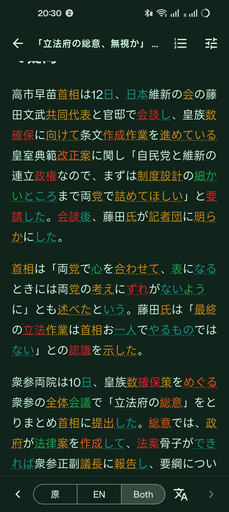
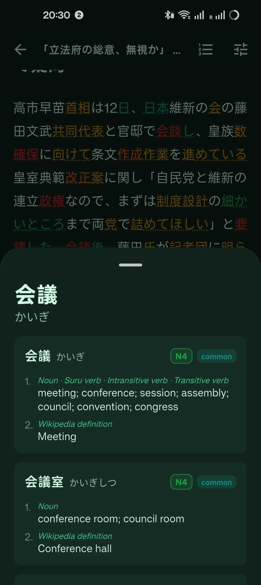
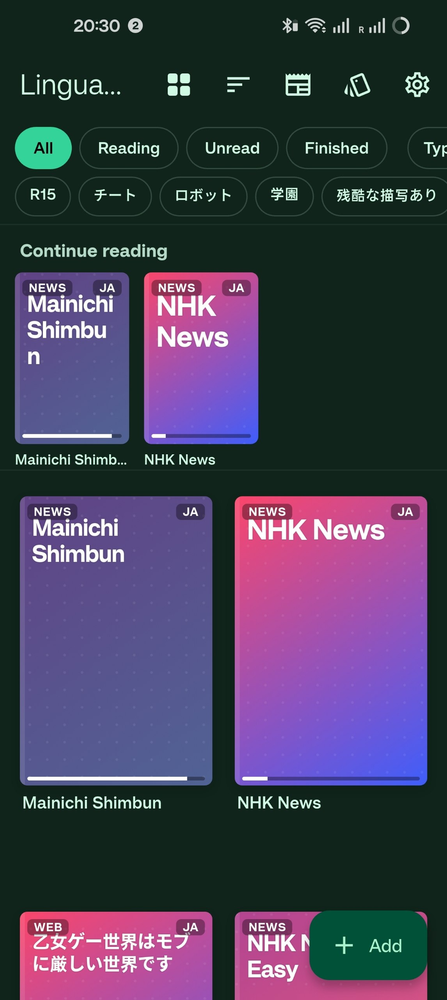
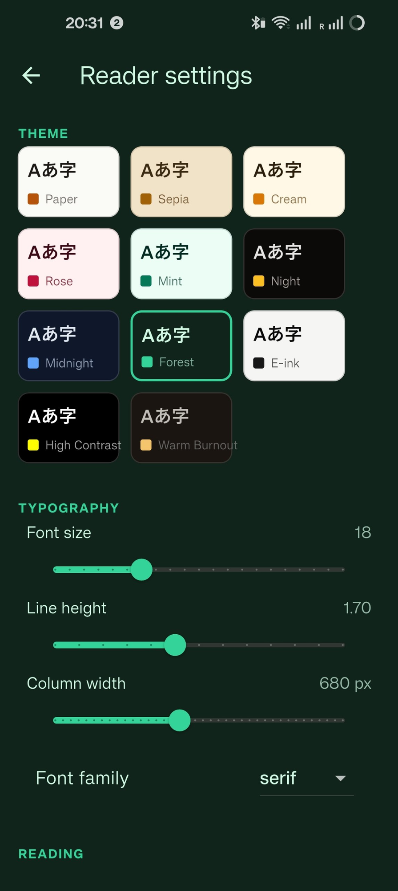
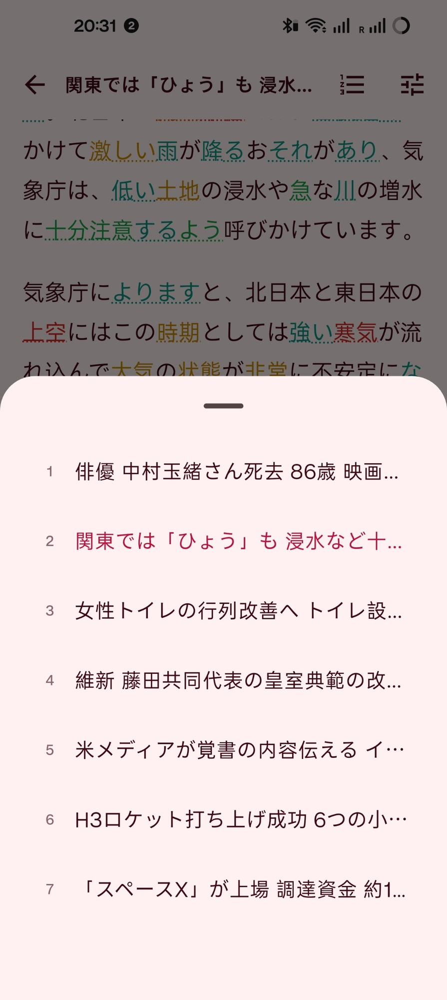

Read real Japanese.
At your level.
LinguaPop turns news articles and novels into a learner's edition of themselves — every word tokenized, JLPT color-coded, and one tap away from a full dictionary entry. Entirely offline, on your device.

A reader that knows what you know
Import an EPUB, a text file, or a live news feed — LinguaPop does the rest with an on-device NLP pipeline.

JLPT color-graded text
Every word is tokenized on-device and underlined in its JLPT level color — gauge a page's difficulty at a glance, and watch it fade as you level up.

Tap any word to learn it
Instant offline JMdict lookups with readings, senses, frequency and JLPT tags — no copy-pasting into another app mid-sentence.

Your library, your progress
Novels, articles, and paired originals + translations live side by side with reading progress, filters, and continue-reading shelves.

Eleven reading themes
Paper to Sepia to E-ink to Forest — with full typography control over size, line height, and column width for long sessions.

Built for real material
Chapter navigation, paired 原 / EN / Both translation modes, and text-to-speech — reading real Japanese stops being an expedition.
Why it feels different
Three decisions most reading apps don't make.
Offline-first, always
The MeCab tokenizer and the full dictionary run on your device. No account, no server, no telemetry — your reading habit is yours.
Real material, not textbook dialogues
NHK articles, Mainichi columns, novels from your own shelf — if it's Japanese text, LinguaPop can grade it.
Reading comfort is a feature
Typography, themes, and paired translations are tuned for hour-long sessions, because language acquisition is a volume game.